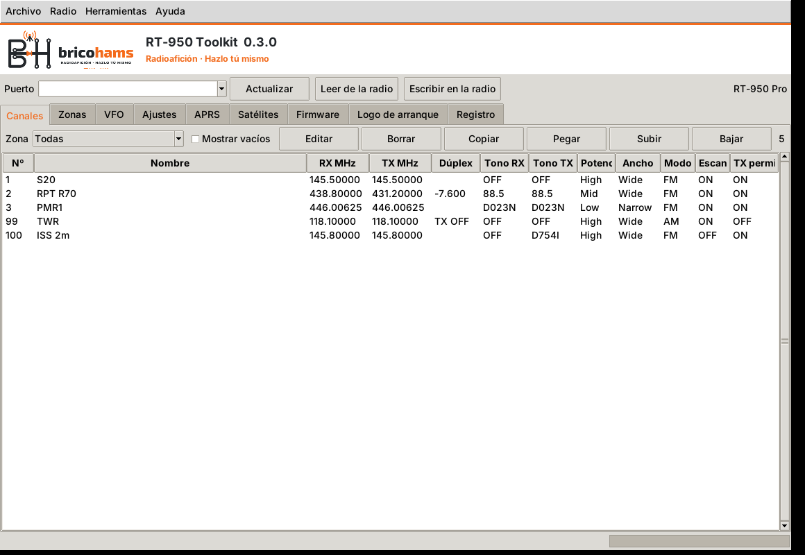

Programa tu Radtel RT-950 / RT-950 Pro en Windows y Linux
Editor de configuración, codeplugs listos para España y Reino Unido, actualización de firmware desde la aplicación o desde el navegador, modo satélite con Doppler y mensajería APRS en el firmware custom.

Descargas
Buscando la última versión…
Los instaladores de Windows están firmados por BricoHams. Si Windows avisa de un editor desconocido, instala el certificado BricoHams-CodeSigning.cer de la versión o pulsa «Más información → Ejecutar de todas formas». Comprueba los ficheros con SHA256SUMS.
Codeplug
Leer, escribir y verificar. Canales, zonas, VFO, ajustes, DTMF, FM/AM/SSB y APRS. Ficheros .dat del CPS y CSV de CHIRP y RT-950 Editor. Copias automáticas antes de escribir.
Codeplugs por país
España: zonas EA1–EA9 con repetidores (URE) y aeropuertos, más PMR446 y CB. Reino Unido: regiones ETCC con repetidores y aeropuertos, símplex, PMR446 y CB. Sobrescribir o añadir a tus canales.
Firmware
Flashea el firmware custom o vuelve al de Radtel desde la aplicación o desde Chrome/Edge con el flasheador web.
Satélites y APRS
Pases, canales Doppler para el firmware original y seguimiento SGP4 en tiempo real con el firmware custom, que también añade mensajería APRS con acuse.